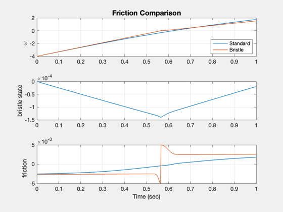
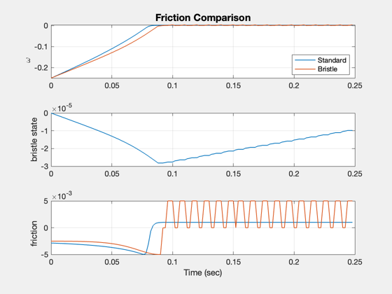

Compare friction models
This simulation compares a standard friction model with a bristle friction model.
Contents
%-------------------------------------------------------------------------- % Copyright (c) 2015 Princeton Satellite Systems, Inc. % All rights reserved. %-------------------------------------------------------------------------- % Since 2016.1 %--------------------------------------------------------------------------
Default data
d = RHSFriction; % We have just one state d.friction.cDampingRWA = 4.0e-5; d.friction.torqueCoulombRWA = 2.45e-3; d.friction.torqueStictionRWA = 3e-3; d.friction.alphaStictionRWA = 8; % Initial state x = [-4;-4;0]; % Motor torque d.torque = 0.008; % Time dT = 0.002; tEnd = 1; nSim = ceil(tEnd/dT);
Simulation
xP = zeros(5,nSim); for k = 1:nSim [~,fS,fB] = RHSFriction(x, 0, d ); xP(:,k) = [x;fS;fB]; x = RK4( 'RHSFriction', x, dT, 0, d ); end % Plotting [t,tL] = TimeLabl((0:nSim-1)*dT); yL = {'\omega', 'bristle state','friction'}; Plot2D( t, xP, tL, yL, 'Friction Comparison','lin',{'[1 2]' '3' '[4 5]'}) legend('Standard','Bristle','location','southeast');
Simulation
Initial state
x = [-0.25;-0.25;0]; tEnd = 0.25; nSim = ceil(tEnd/dT); d.friction.useSigmoid = 1; d.friction.betaSigmoid = 300; % Motor torque d.torque = 0.001; xP = zeros(5,nSim); for k = 1:nSim [~,fS,fB] = RHSFriction(x, 0, d ); xP(:,k) = [x;fS;fB]; x = RK4( 'RHSFriction', x, dT, 0, d ); end % Plotting [t,tL] = TimeLabl((0:nSim-1)*dT); yL = {'\omega', 'bristle state','friction'}; Plot2D( t, xP, tL, yL, 'Friction Comparison','lin',{'[1 2]' '3' '[4 5]'}) legend('Standard','Bristle','location','southeast'); %-------------------------------------- % $Id: d009dd5636f620d5460ccf03d48ebea0d3ffa315 $